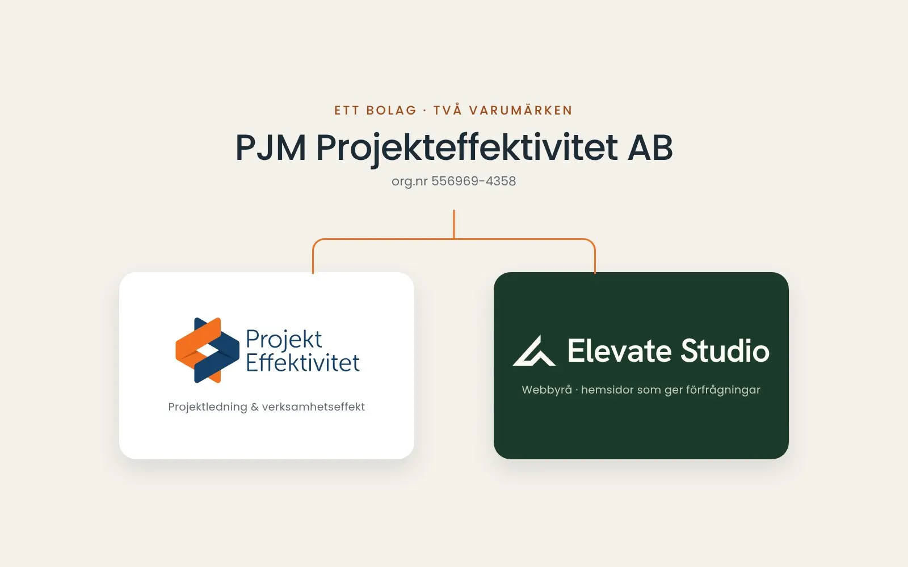

Elevate Studio – webbyrån inom PJM Projekteffektivitet AB
Webbyrån Elevate Studio i Uppsala bygger hemsidor som ger förfrågningar. Elevate Studio är ett varumärke som tillhör PJM Projekteffektivitet AB – samma synsätt på effekt, tillämpat på webben.